Criar conta ou aceitar convite
Se sua empresa ainda não usa o Immuno Ops, crie a conta: você vira administrador da organização. Se alguém da sua empresa já usa, peça um convite. Não crie uma segunda conta para a mesma empresa.
Criar uma conta nova
- Na tela de login, clique em Criar conta →.
- Informe seu e-mail e clique em Enviar código →.
- Digite o código de 6 dígitos que chegou no e-mail. Não chegou? Espere o contador e use Reenviar.
- Preencha nome completo e senha (8 ou mais caracteres, com maiúscula, minúscula, número e símbolo) e clique em Criar minha conta →.
- Responda as perguntas rápidas: WhatsApp, empresa e cargo, tamanho do cluster e o que dói mais hoje.
- Confira os dados e clique em Concluir cadastro. Você entra direto no console.
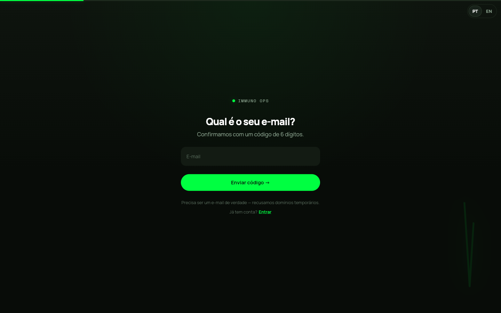
Aceitar um convite
Aceitar convite
Ana Souza convidou você para a organização Acme com o papel Operador.
- Abra o link do e-mail de convite.
- A tela mostra quem convidou, a organização e o seu papel.
- Defina nome e senha e clique em Aceitar e entrar.
Entrar no console
- Acesse app.immunoops.io/ui/login.
- Informe e-mail e senha e clique em Entrar →.
- Se você ativou a verificação em duas etapas, digite o código de 6 dígitos do app autenticador e clique em Verificar código.
- Se o seu e-mail tem acesso a mais de uma organização, escolha a organização padrão. Ela abre sempre que você entra, e dá para trocar pelo seletor de organização, no canto superior direito.
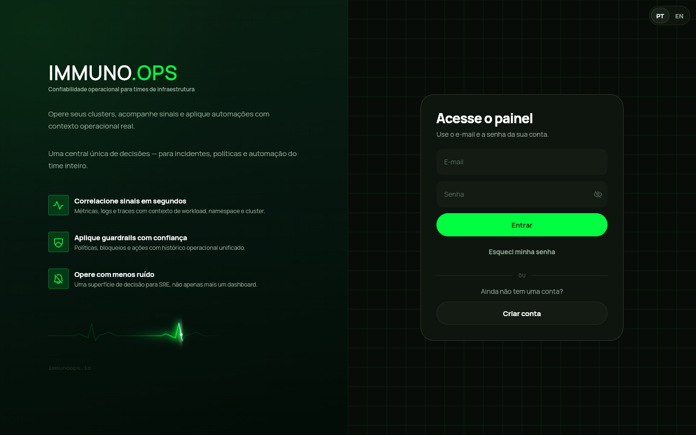
Tour de boas-vindas
Logo depois do cadastro, e enquanto nenhum serviço estiver conectado, um tour guiado abre por cima do Início. Ele ilumina a barra do topo e as abas de Infraestrutura e mostra onde conectar seus serviços.
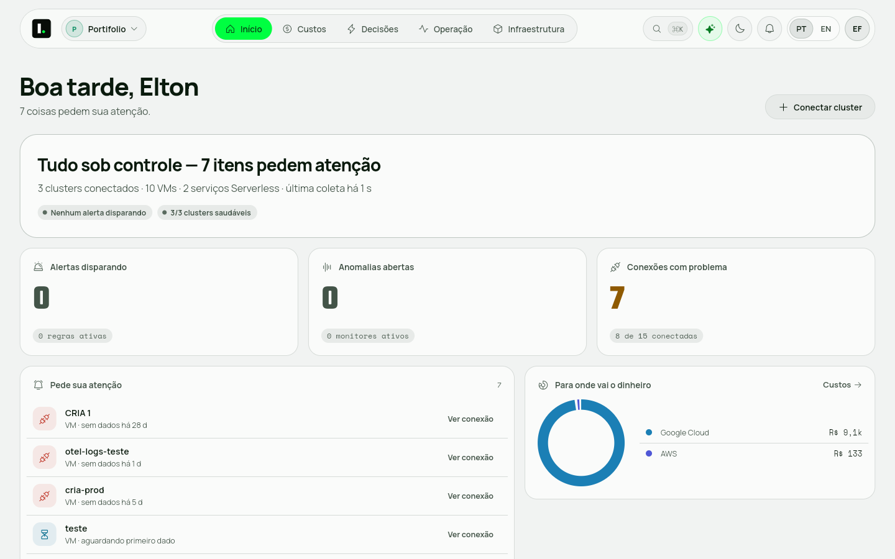
| Passo | O que mostra |
|---|---|
| 1 | Boas-vindas |
| 2 | Seus serviços ficam em Infraestrutura |
| 3 | Conectar um cluster Kubernetes (botão Ir para Clusters) |
| 4 · 5 | Serverless: onde fica e como registrar |
| 6 | Sua aplicação em Instrumentação (SDK) |
| 7 | VMs e o agente no host |
Esc fecham o tour. Ele volta no próximo login enquanto nada estiver conectado. Os passos 05 a 07 cobrem o mesmo caminho com mais detalhe.Conhecer o console
A navegação fica na barra do topo, com cinco áreas: Início, Custos, Decisões, Operação e Infraestrutura. Cada área tem abas. À esquerda fica o seletor de organização; à direita, a busca (⌘K), o agente de IA (✦), o tema, o sino de notificações, o idioma e o seu avatar, que abre Configurações.
| Área | Abas e o que tem |
|---|---|
| Início | Primeira tela depois do login: alertas disparando, anomalias, conexões com problema, o que pede sua atenção e para onde vai o dinheiro. |
| Custos | Resumo, Kubernetes FinOps, SKUs de nuvem e FOCUS Normalizer (passo 10). |
| Decisões | Recomendações e a fila de aprovação. |
| Operação | Visão geral, Incidentes, Workloads, Mobile, Monitoramento e Dashboards. Cada serviço abre na Visão 360. |
| Infraestrutura | Clusters, VMs, Serverless, Instrumentação e Contas de nuvem. |
| Configurações (avatar) | Políticas, Notificações, Equipe, Empresa e plano e Segurança. |
Agente de IA
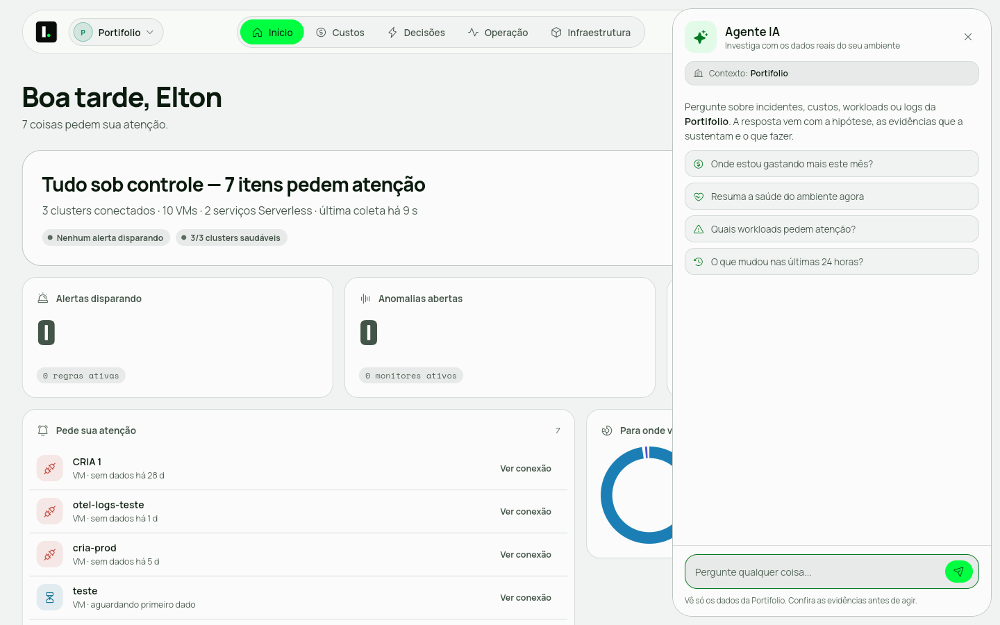
O botão ✦ no topo (atalho ⌘J) abre o Agente IA, um especialista em SRE, DevOps e FinOps que responde com os dados reais da sua organização. Antes de responder, ele consulta sozinho o que a pergunta precisa:
| Pergunte sobre | O agente consulta |
|---|---|
| Saúde, "o que está quebrado", um workload | Workloads: status, taxa de erro, p95, reinícios, réplicas, CPU e memória contra o pedido |
| Custo, "onde gasto mais", tendência | Custo do mês por provedor, serviço e namespace, gasto diário e custo de um workload |
| Incidentes e alertas | Incidentes abertos ou resolvidos e alertas que dispararam |
| "Por que não chegam dados" | VMs, Cloud Run, Lambda, apps e contas de nuvem, com o status de cada um |
Exemplos: "Onde estou gastando mais este mês?", "Tem incidente aberto?", "Como está o checkout-api?", "Minha Lambda não manda dados, por quê?". A resposta vem no idioma da pergunta, com hipótese e próximos passos quando houver.
Como ler a resposta
| Parte | O que é |
|---|---|
| Observado | O que o agente consultou para responder, como “Consultou o custo do mês por provedor e serviço” ou “Leu os logs recebidos dos serverless e apps”. |
| Hipótese | A explicação mais provável, com os números que sustentam. |
| Confiança | Alta, média ou baixa. Fica baixa quando a evidência é pouca ou quando a hipótese não se apoia no que o agente leu. |
| Ainda não confirmado | O que o agente não conseguiu verificar com os dados que tem. Confira antes de agir. |
| Próximos passos | O que olhar ou fazer em seguida, com o caminho no console. |
| Fonte | De qual organização vieram os dados. O ícone ao lado copia a resposta. |
Conversas de exemplo
Perguntas que o agente responde bem, uma por tema:
| Tema | Pergunta |
|---|---|
| Custo | “Onde estou gastando mais este mês?” |
| Saúde de um serviço | “Como está a saúde do checkout-api?” |
| Triagem | “Quais workloads pedem atenção?” |
| Dados que não chegam | “Por que a VM CRIA 1 não manda dados?” |
Na conversa ao lado, real, o agente consultou os logs da aplicação, viu que nenhuma linha chegou na última hora e que o último sinal foi em 14 de outubro. A confiança é alta porque a hipótese se apoia no que ele leu. Em Ainda não confirmado ele diz o que não tem como verificar (mudança no código, erros que não viraram telemetria) e em Próximos passos o que conferir: o processo, a chave do SDK e a rede até o Immuno Ops.
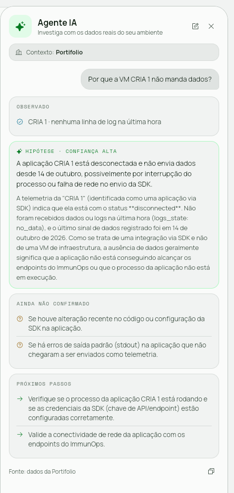
Conectar um cluster Kubernetes
É o passo mais importante. Com o agent instalado, métricas, logs, traces e o inventário de workloads começam a chegar sozinhos.
- Vá em Infraestrutura › Clusters e clique em Conectar cluster.
- A janela tem 3 passos. No passo 1, Cluster Kubernetes já vem marcado. Escolha GKE, EKS ou AKS, dê o Nome do cluster (ex.:
prod-sa-east), escolha o Ambiente (Produção ou Staging) e clique em Continuar. - No passo 2, Instalar o agente, o Comando de instalação já traz o token do cluster. Clique em Copiar, rode num terminal com o
kubectlapontado para o cluster e clique em Já rodei o comando. - O passo 3 fica em Aguardando o primeiro sinal… até o agent mandar dado e mostra Conectado!. Pode fechar antes: o cluster já aparece como Aguardando conexão.
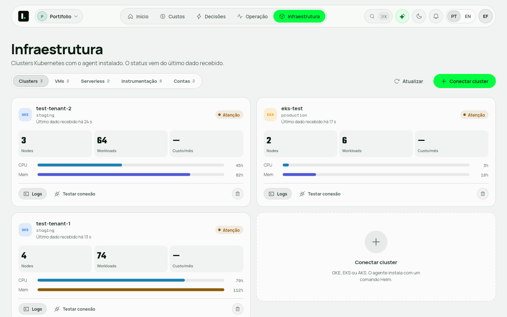
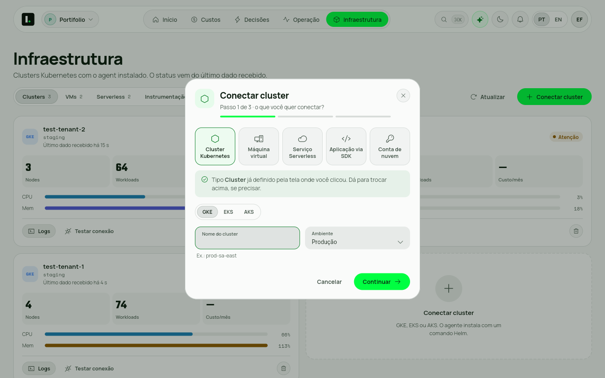
Como ler o status do cluster
| Status | O que significa | O que fazer |
|---|---|---|
| Aguardando conexão | Cluster registrado, mas o agent nunca mandou dado. | Confira se o comando rodou sem erro e se os pods do agent estão Running. |
| Conectado | O agent está mandando dados. | Nada. Os dados já aparecem em Operação. |
| Desconectado | O último sinal tem mais de 5 minutos. | Verifique o agent no cluster: pods, rede de saída e token. |
Ver diferenças entre clusters
Com dois ou mais clusters conectados, Infraestrutura › Clusters mostra, abaixo dos cards, a tabela de diferenças: o mesmo workload comparado em cada cluster. A primeira coluna de valores é a referência; o que difere fica destacado. Os campos comparados são imagem, réplicas e variáveis de ambiente (só se são iguais ou diferentes, sem mostrar os valores). Ausente quer dizer que o workload não existe naquele cluster. Filtre por Namespace ou use Buscar workload.
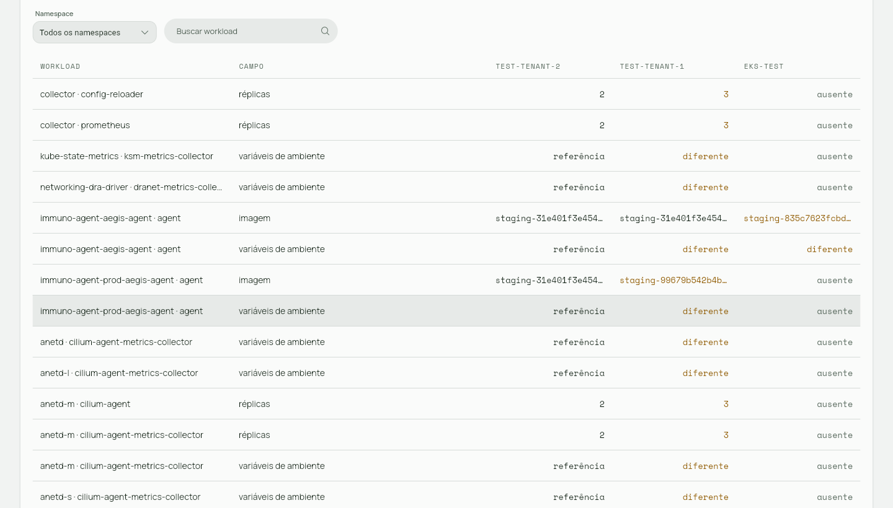
Serverless e VMs
O Immuno Ops é multicloud: VMs em GCP, AWS, Azure ou on-prem, e serviços serverless no GCP (Cloud Run) e na AWS (Lambda), na mesma tela.
| Tipo | Nuvem | O que instalar | O que chega |
|---|---|---|---|
| Cluster | GKE, EKS, AKS ou outro Kubernetes | Agent via Helm no cluster. | Workloads, métricas, logs e traces. |
| Cloud Run | GCP | Nada. | Métricas e logs do Cloud Monitoring e do Cloud Logging do projeto. |
| Lambda | AWS | O SDK na função (passo 07). | Métricas, logs e eventos que a função envia. |
| VM | GCP, AWS, Azure ou on-prem | Agente no host (container Docker ou binário). | CPU, memória, logs do host e dos containers, tipo de máquina e sistema. |
Serverless: Cloud Run (GCP)
- Vá em Infraestrutura › Serverless e clique em Conectar Serverless.
- Escolha GCP.
- Informe o Nome do serviço (exatamente como no Cloud Run), a Região (ex.:
us-central1) e o Projeto GCP. Clique em Continuar. O monitoramento começa sozinho pelo Cloud Monitoring, sem nada para instalar.
Serverless: Lambda (AWS)
- Vá em Infraestrutura › Serverless e clique em Conectar Serverless.
- Escolha AWS.
- Informe o nome da função, a região (por exemplo
us-east-1) e o ID da conta AWS, com 12 dígitos. O ID vem preenchido com a conta AWS da organização. Clique em Continuar. - Instrumente a função com o SDK e chame
flush()antes de retornar. Veja Lambda com o SDK.
app.immunoops.io com a chave de conexão e não pede papel na função. Numa VPC sem internet, a função precisa de um NAT Gateway para essa saída. Invocações, duração, execuções simultâneas e os logs do grupo /aws/lambda/<função> vêm do CloudWatch, lidos pelo worker com o papel immunoops-billing-reader, criado com um clique em Conta AWS (Conectar à AWS).Azure Functions aparece como em breve.
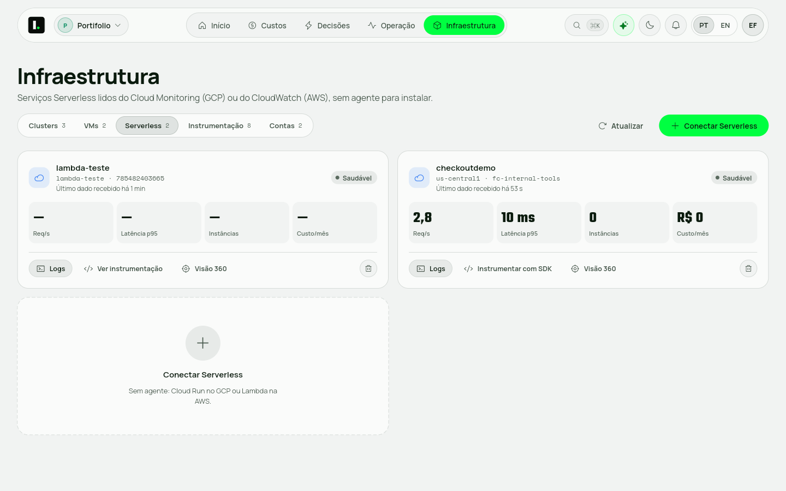
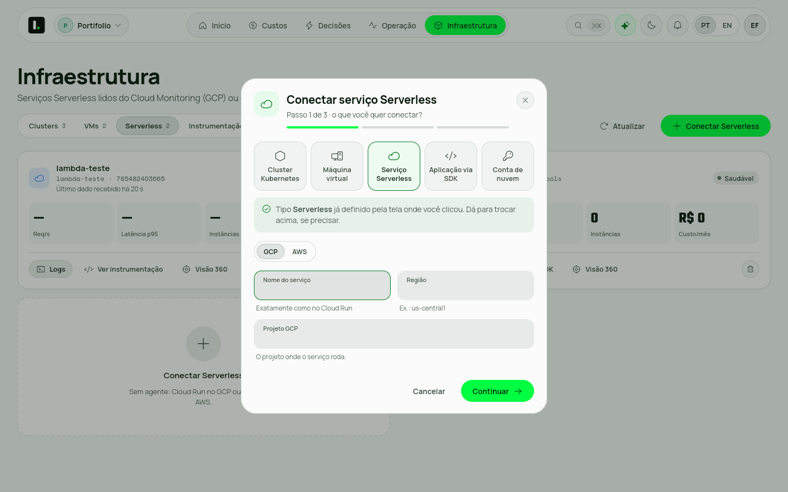
VMs
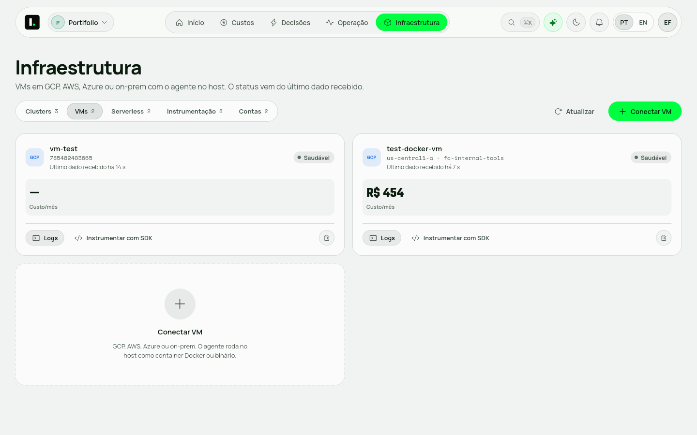
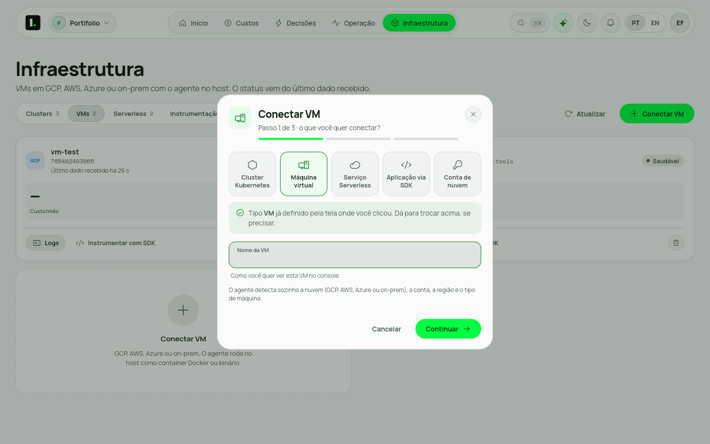
O cadastro pede só o nome. O agente descobre sozinho onde a VM roda, lendo o serviço de metadados da nuvem: GCP (Compute Engine), AWS (EC2, IMDSv2) ou Azure. Fora de uma nuvem, a VM aparece como On-prem.
- Vá em Infraestrutura › VMs e clique em Conectar VM.
- No passo 1, Máquina virtual já vem marcado. Preencha o Nome da VM, do jeito que você quer vê-la no console, e clique em Continuar.
- No passo 2, copie o comando de instalação, rode na VM e clique em Já rodei o comando. O token vale só para esta VM e só aparece agora.
Quando o agente manda o primeiro dado, o cartão da VM mostra o provedor (GCP, AWS, Azure ou On-prem), a zona ou região, a conta (projeto GCP, conta AWS ou assinatura Azure) e o tipo de máquina.
| Nuvem | O que o agente detecta | Cuidado |
|---|---|---|
| GCP | Projeto, zona, nome da instância e tipo de máquina | Nada. |
| AWS (EC2) | Conta, região, zona, ID da instância e tipo de instância | Com o agente em Docker, o IMDSv2 precisa de HttpPutResponseHopLimit 2 (o padrão do EC2 é 1 e bloqueia o container). |
| Azure | Assinatura, região, zona, nome e tamanho da VM | Nada. |
| On-prem | Nada de nuvem: só host, sistema e uso | Nada. |
Para ajustar o hop limit numa EC2 existente:
aws ec2 modify-instance-metadata-options --instance-id ID_DA_INSTANCIA --http-tokens required --http-put-response-hop-limit 2Permissões de VM e Cloud Run
Quem libera no Google Cloud é alguém que altera o IAM do projeto do recurso. A conta é a do worker, aegis-worker@immunoops-prod.iam.gserviceaccount.com, a mesma do billing em Conta de nuvem. Se a organização bloqueia contas de fora, inclua o customer ID C011tigzz neste projeto também, do mesmo jeito descrito em Se a organização bloqueia contas de fora.
Cloud Run
O worker lê o Cloud Monitoring e o Cloud Logging do projeto. Nada é instalado no container. No projeto GCP do serviço, a conta do worker precisa de dois papéis de leitura:
| Papel | ID | Onde | Para quê |
|---|---|---|---|
| Monitoring Viewer | roles/monitoring.viewer | projeto do serviço | Requisições, latência, CPU, memória e instâncias |
| Logs Viewer | roles/logging.viewer | projeto do serviço | Logs de stdout, stderr e requisições |
gcloud projects add-iam-policy-binding PROJETO --member="serviceAccount:aegis-worker@immunoops-prod.iam.gserviceaccount.com" --role="roles/monitoring.viewer"
gcloud projects add-iam-policy-binding PROJETO --member="serviceAccount:aegis-worker@immunoops-prod.iam.gserviceaccount.com" --role="roles/logging.viewer"Troque PROJETO pelo ID do projeto do serviço. No exemplo da tela, é acme-prod-123. Rode os dois num terminal autenticado no Google Cloud.
Sem o papel de Monitoring, os números do serviço ficam sem leitura. Sem o papel de Logging, a tela de logs cita roles/logging.viewer e o projeto. Se a tela disser que a coleta de logs ainda não está habilitada para a conta, peça ao suporte para habilitá-la: o papel prepara o acesso, e a coleta só começa depois dessa liberação.
VM
Métricas e logs da VM saem do agente instalado no host. Quem instala precisa rodar o comando na máquina, e a VM precisa de saída HTTPS para app.immunoops.io.
A aba Suspensão liga e desliga a instância no Compute Engine. Para isso, a conta do worker precisa listar, iniciar e parar instâncias nesse projeto. Crie um papel só com essas três permissões e conceda à conta:
gcloud iam roles create immunoOpsVmPower --project=PROJETO --title="Immuno Ops VM power" --permissions=compute.instances.list,compute.instances.start,compute.instances.stop --stage=GA
gcloud projects add-iam-policy-binding PROJETO --member="serviceAccount:aegis-worker@immunoops-prod.iam.gserviceaccount.com" --role="projects/PROJETO/roles/immunoOpsVmPower"Troque PROJETO pelo ID do projeto da VM. O papel cobre listar, iniciar e parar. A coleta do agente segue com a instalação no host.
CloudWatch da Lambda
Quem libera na AWS altera o papel immunoops-billing-reader, o mesmo que o worker já assume para o billing. A função não precisa de cluster nem de EC2. Nada é instalado na função. O worker lê o CloudWatch.
| Ação | Onde | Para quê |
|---|---|---|
cloudwatch:GetMetricData | namespace AWS/Lambda | Invocações, p95 da duração e pico de execuções simultâneas |
cloudwatch:ListMetrics | namespace AWS/Lambda | Encontrar as métricas da função |
logs:FilterLogEvents | grupo /aws/lambda/* | Ler as linhas da função na aba de logs |
O worker lê o grupo /aws/lambda/ seguido do nome da função. As linhas aparecem na aba de logs. A leitura do export continua no mesmo papel, em Permissões no papel de leitura.
aws iam put-role-policy --role-name immunoops-billing-reader --policy-name immunoops-lambda-cloudwatch --policy-document '{"Version":"2012-10-17","Statement":[{"Effect":"Allow","Action":["cloudwatch:GetMetricData","cloudwatch:ListMetrics"],"Resource":"*","Condition":{"StringEquals":{"cloudwatch:namespace":"AWS/Lambda"}}},{"Effect":"Allow","Action":["logs:FilterLogEvents"],"Resource":["arn:aws:logs:*:*:log-group:/aws/lambda/*","arn:aws:logs:*:*:log-group:/aws/lambda/*:*"]}]}'Sem as ações de métrica, a função fica cadastrada e os números do CloudWatch não chegam. Sem logs:FilterLogEvents, a aba de logs fica sem as linhas da função.
Ligar e desligar a VM
Métricas e logs da EC2 saem do agente instalado no host. A conta não precisa de cluster. Ligar e desligar usa um papel separado e opcional, immunoops-power: quem só quer custo, métricas e logs não dá permissão de escrita ao Immuno Ops.
| Papel | Ação | Onde | Para quê |
|---|---|---|---|
immunoops-billing-reader | ec2:DescribeInstances | conta | Listar a instância e achar os nós de um cluster EKS para somar o custo deles no cluster |
immunoops-power | ec2:StartInstances | instâncias da conta | Ligar |
immunoops-power | ec2:StopInstances | instâncias da conta | Desligar |
O immunoops-power tem a mesma confiança do papel de leitura: a conta aegis-worker@immunoops-prod.iam.gserviceaccount.com no Google e a audiência da sua organização (a mesma AUDIENCIA de Conta AWS). No GCP, as permissões equivalentes estão em Permissões da VM.
aws iam put-role-policy --role-name immunoops-billing-reader --policy-name immunoops-ec2-describe --policy-document '{"Version":"2012-10-17","Statement":[{"Effect":"Allow","Action":"ec2:DescribeInstances","Resource":"*"}]}'
aws iam create-role --role-name immunoops-power --assume-role-policy-document '{"Version":"2012-10-17","Statement":[{"Effect":"Allow","Principal":{"Federated":"accounts.google.com"},"Action":"sts:AssumeRoleWithWebIdentity","Condition":{"StringEquals":{"accounts.google.com:sub":"101814243271068167435","accounts.google.com:aud":"101814243271068167435","accounts.google.com:oaud":"'$AUDIENCIA'"}}}]}'
aws iam put-role-policy --role-name immunoops-power --policy-name immunoops-vm-power --policy-document '{"Version":"2012-10-17","Statement":[{"Effect":"Allow","Action":["ec2:StartInstances","ec2:StopInstances"],"Resource":"arn:aws:ec2:*:*:instance/*"}]}'Sem o papel immunoops-power, a política de Suspensão não liga nem desliga a EC2; o resto continua funcionando. No CloudTrail, cada ação aparece com a sessão immunoops-<ID da organização>.
Conta de nuvem
A conta é somente leitura do billing. Nada é criado nem alterado nos recursos da nuvem. Quem cadastra no Immuno Ops é o Administrador. Quem libera no Google Cloud é alguém que altera o IAM do dataset de billing e, se a organização restringe domínios, a política do projeto.
O caminho é Infraestrutura, aba Contas (app.immunoops.io/ui/infrastructure?tab=contas). Uma conta GCP traz o custo do projeto. Uma conta AWS ou Azure conta como “ao menos uma conta” para uma VM, mas não substitui a conta GCP do Cloud Run.
Ativar o export no Google Cloud
- No Google Cloud, abra a conta de faturamento que paga os projetos e vá em Exportação de faturamento › Exportação para o BigQuery.
- Ative o export de custo de uso (padrão ou detalhado). A tabela do Immuno Ops é essa, com as colunas de custo do Cloud Billing. Não use uma tabela no formato FOCUS.
- Escolha o projeto e o dataset. O Google cria uma tabela com nome no formato
gcp_billing_export_v1_…ougcp_billing_export_resource_v1_…. - Anote o identificador completo, no formato
projeto.dataset.tabela. Exemplo ilustrativo:acme-billing.billing_export.gcp_billing_export_v1_012345_ABCDE1_234567.
Cadastrar no Immuno Ops
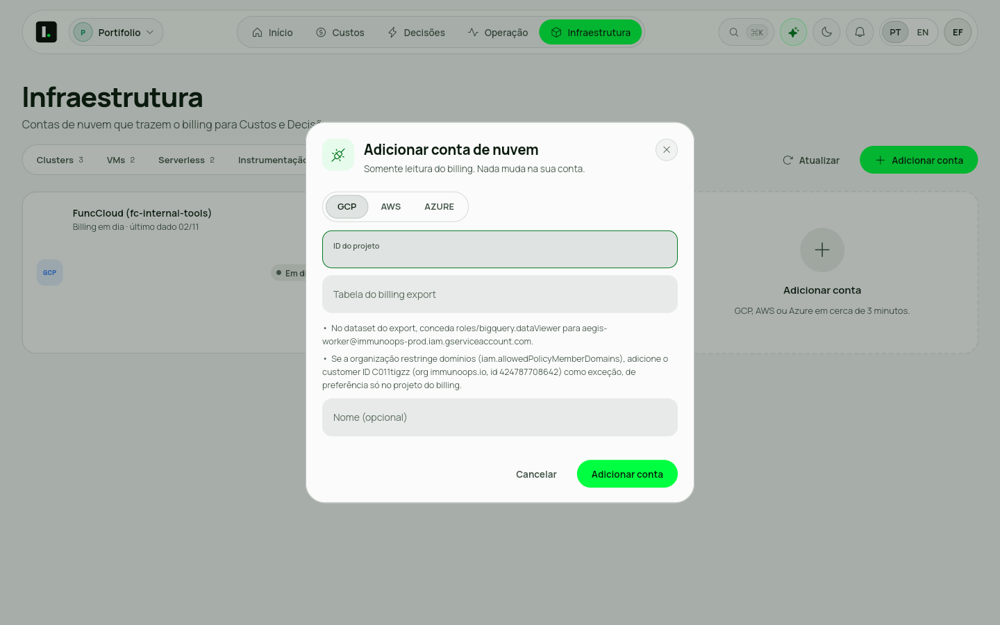
- Vá em Infraestrutura, aba Contas, e clique em Adicionar conta.
- Escolha GCP.
- Informe o ID do projeto e a Tabela do billing export (
projeto.dataset.tabela). O nome é opcional. - Clique em Adicionar conta.
Permissões no dataset
No dataset do export, a conta do worker precisa do papel BigQuery Data Viewer (roles/bigquery.dataViewer). É leitura. Não conceda papéis de edição, de administração do projeto nem de faturamento.
| Conta de serviço | Papel | Onde |
|---|---|---|
aegis-worker@immunoops-prod.iam.gserviceaccount.com | roles/bigquery.dataViewer | dataset do export |
Depois de salvar a tabela, a conta no console mostra o comando já com o dataset preenchido. Copie de lá. A forma, com PROJETO:DATASET no lugar do dataset (os dois primeiros trechos de projeto.dataset.tabela, separados por :), é:
bq add-iam-policy-binding --member="serviceAccount:aegis-worker@immunoops-prod.iam.gserviceaccount.com" --role="roles/bigquery.dataViewer" PROJETO:DATASETRode o comando num terminal autenticado no Google Cloud, com permissão para alterar o IAM desse dataset. No exemplo ilustrativo, PROJETO:DATASET é acme-billing:billing_export.
Se a organização bloqueia contas de fora
Algumas organizações restringem quem pode receber papel no IAM (iam.allowedPolicyMemberDomains, “Domain restricted sharing”). O comando acima falha com a mensagem de que o membro não pertence a um cliente permitido.
Inclua o customer ID C011tigzz como exceção dessa política. A organização é immunoops.io, id 424787708642. Faça a exceção só no projeto do billing, não na organização inteira.
- No Google Cloud, abra IAM e administrador › Políticas da organização no projeto do billing.
- Abra a restrição Domain restricted sharing (
constraints/iam.allowedPolicyMemberDomains). - Adicione C011tigzz aos valores permitidos, sem remover os que já existem.
- Salve e rode de novo o comando
bq.
Testar
- Volte na conta, em Infraestrutura › Contas, e clique em Testar conexão.
- O teste lê uma linha da tabela. Sem erro de permissão, a conta fica pendente até chegar custo, ou em dia quando o custo recente aparece.
| O que a tela diz | O que fazer |
|---|---|
| Sem tabela | Informe projeto.dataset.tabela e salve. |
| A organização bloqueia contas de fora | Inclua o customer ID C011tigzz e teste de novo. |
| Não foi possível ler o export | Confira se o comando bq rodou no dataset certo e teste de novo. |
Conta AWS
A conta AWS libera, para a sua organização, os recursos da AWS no Immuno Ops. Quem cadastra é um Administrador; na AWS, alguém com permissão de IAM e de Billing na conta.
| O que | Situação |
|---|---|
| Cluster EKS | Disponível. Agent via Helm, como no passo 05. |
| VM EC2 | Disponível. O agente detecta conta, região e tipo de instância (VMs). |
| Lambda | Disponível. Métricas e logs pelo CloudWatch depois de Conectar à AWS; ou pelo SDK, sem nada na conta. |
| Custo da AWS (billing) | Disponível. O export FOCUS é criado no Conectar à AWS e lido a cada 6 horas; o primeiro arquivo chega em até 24 horas. Onde ver: Custo da AWS. |
Passo 1 — Descobrir o ID da conta
No console da AWS, clique no nome da conta no canto superior direito e copie o Account ID, com 12 dígitos. Pelo terminal:
aws sts get-caller-identity --query Account --output textPasso 2 — Cadastrar no Immuno Ops
- Vá em Infraestrutura, aba Contas, e clique em Adicionar conta.
- Escolha AWS.
- Informe o ID da conta (12 dígitos). O nome é opcional.
- Clique em Adicionar conta.
A conta aparece como pendente até o Conectar à AWS (passo 2b). Isso não impede EKS, EC2 e Lambda.
Passo 2b — Conectar à AWS (um clique)
É como nas outras ferramentas de observabilidade: você não escreve IAM.
- No cartão da conta AWS, em Infraestrutura › Contas, clique em Conectar à AWS.
- O console da AWS abre no CloudFormation, na região
us-east-1, com a pilhaimmunoops-integrationjá preenchida para a sua organização. Entre com um usuário que possa criar papéis IAM. - Marque a confirmação de criação de recursos IAM e clique em Criar pilha. Leva cerca de 2 minutos.
| A pilha cria | Para quê |
|---|---|
Papel immunoops-billing-reader | Leitura: CloudWatch e logs da Lambda, listar EC2 e funções, ler o export de custo. Sem chave de acesso: confia no Immuno Ops só com a audiência da sua organização |
Bucket immunoops-focus-CONTA e export immunoops-focus | Custo diário no formato FOCUS 1.2. O primeiro arquivo chega em até 24 horas |
Papel immunoops-power (opcional, EnablePower=true) | Ligar e desligar EC2 nas políticas de Suspensão |
Para conferir antes de criar, abra Detalhes da conexão no cartão: aparecem a audiência e o ARN do papel. Para remover o acesso, apague a pilha no CloudFormation; o bucket do export fica guardado.
O passo 4 e as seções seguintes descrevem a mesma configuração feita à mão, para quem não pode usar o CloudFormation.
Passo 3 — Conectar o que roda nessa conta
- EKS: Infraestrutura › Clusters › Conectar cluster, escolha AWS e rode o comando
helmno cluster (passo 05). - EC2: Infraestrutura › VMs › Conectar VM, dê um nome e rode o comando na instância. Com o agente em Docker, ajuste o hop limit do IMDSv2 para 2 (VMs).
- Lambda: Infraestrutura › Serverless › Conectar Serverless, provedor AWS. Métricas e logs chegam pelo CloudWatch depois do passo 2b; o SDK (Lambda com o SDK) é opcional, para métricas de negócio.
Os passos de EKS, EC2 e SDK não dão ao Immuno Ops acesso à conta: os dados saem do agente ou do SDK. O acesso de leitura à conta vem só da pilha do passo 2b.
Passo 4 — Preparar o billing à mão (sem CloudFormation)
O custo da AWS vai ser lido de um export de faturamento no formato FOCUS que você cria na sua conta, num bucket seu. A AWS só gera esse export daqui para a frente: criar agora faz o histórico já estar lá quando a leitura for liberada. Nada é compartilhado com o Immuno Ops neste passo.
Rode num terminal autenticado na conta, trocando CONTA pelo ID de 12 dígitos:
CONTA=123456789012
BUCKET=immunoops-focus-$CONTA
aws s3api create-bucket --bucket $BUCKET --region us-east-1
aws s3api put-public-access-block --bucket $BUCKET --public-access-block-configuration BlockPublicAcls=true,IgnorePublicAcls=true,BlockPublicPolicy=true,RestrictPublicBuckets=true
aws s3api put-bucket-policy --bucket $BUCKET --policy '{"Version":"2012-10-17","Statement":[{"Effect":"Allow","Principal":{"Service":["billingreports.amazonaws.com","bcm-data-exports.amazonaws.com"]},"Action":["s3:PutObject","s3:GetBucketPolicy"],"Resource":["arn:aws:s3:::'$BUCKET'","arn:aws:s3:::'$BUCKET'/*"],"Condition":{"StringLike":{"aws:SourceAccount":"'$CONTA'"}}}]}'Depois crie o export no console da AWS:
- Abra Billing and Cost Management › Data Exports e clique em Create.
- Escolha FOCUS 1.2 with AWS columns e o nome
immunoops-focus. - Em Data export delivery options, formato Parquet, atualização diária e Overwrite existing data export file.
- Em Data export storage settings, o bucket
immunoops-focus-CONTAe o prefixofocus. - Clique em Create. O primeiro arquivo pode levar até 24 horas.
aws:SourceArn, que aparece em exemplos da AWS, faz a criação do export falhar com S3 bucket permission validation failed.Permissões no papel de leitura
Quem libera na AWS é alguém que altera o IAM da conta. O papel é somente leitura do export. Nada é criado nem alterado nos recursos da nuvem. Não crie usuário IAM e não gere chave de acesso.
| Ação | Onde | Para quê |
|---|---|---|
s3:ListBucket | bucket do export, só o prefixo focus/ | Listar os arquivos do export |
s3:GetObject | objetos focus/* nesse bucket | Ler o manifesto e os arquivos Parquet |
pricing:GetProducts | conta (tabela de preços pública da AWS) | Preço de tabela das instâncias EC2 em Custos › SKUs de nuvem. Não acessa nenhum recurso da conta |
A confiança do papel aponta para o Google (accounts.google.com), para a conta aegis-worker@immunoops-prod.iam.gserviceaccount.com. São três condições, todas obrigatórias:
| Condição | Valor |
|---|---|
accounts.google.com:sub | 101814243271068167435 |
accounts.google.com:aud | 101814243271068167435 |
accounts.google.com:oaud | immunoops-tenant- + id da organização |
O número é o ID único dessa conta de serviço. A condição oaud é exclusiva da organização: com outra audiência, a AWS responde AccessDenied.
Não conceda s3:PutObject, s3:*, AdministratorAccess nem papel de faturamento. Essas ações cobrem a leitura.
Rode num terminal autenticado na conta. CONTA é o ID de 12 dígitos. BUCKET é o bucket do passo 4. Troque AUDIENCIA por immunoops-tenant- seguido do id da organização. A audiência aparece em Detalhes da conexão, no cartão da conta AWS.
CONTA=123456789012
BUCKET=immunoops-focus-$CONTA
AUDIENCIA=immunoops-tenant-ID_DA_ORGANIZACAO
aws iam create-role --role-name immunoops-billing-reader --assume-role-policy-document '{"Version":"2012-10-17","Statement":[{"Effect":"Allow","Principal":{"Federated":"accounts.google.com"},"Action":"sts:AssumeRoleWithWebIdentity","Condition":{"StringEquals":{"accounts.google.com:sub":"101814243271068167435","accounts.google.com:aud":"101814243271068167435","accounts.google.com:oaud":"'$AUDIENCIA'"}}}]}'
aws iam put-role-policy --role-name immunoops-billing-reader --policy-name immunoops-billing-read --policy-document '{"Version":"2012-10-17","Statement":[{"Effect":"Allow","Action":"s3:ListBucket","Resource":"arn:aws:s3:::'$BUCKET'","Condition":{"StringLike":{"s3:prefix":["focus/","focus/*"]}}},{"Effect":"Allow","Action":"s3:GetObject","Resource":"arn:aws:s3:::'$BUCKET'/focus/*"}]}'
aws iam put-role-policy --role-name immunoops-billing-reader --policy-name immunoops-pricing-read --policy-document '{"Version":"2012-10-17","Statement":[{"Effect":"Allow","Action":"pricing:GetProducts","Resource":"*"}]}'Quem conectou pelo Conectar à AWS antes desta permissão: atualize a pilha immunoops-integration no CloudFormation (Atualizar › Substituir o modelo atual, com o modelo do link Conectar à AWS) ou rode só o último comando acima. Sem ela, SKUs de nuvem lista os tipos da AWS sem preço e diz qual permissão falta.
O papel fica arn:aws:iam::CONTA:role/immunoops-billing-reader. Guarde esse ARN.
| O que acontece | O que fazer |
|---|---|
A criação do export falha com S3 bucket permission validation failed | A política do bucket tem aws:SourceArn. Use só aws:SourceAccount, como no passo 4. |
AccessDenied ao assumir o papel | Confira sub, aud e oaud. O oaud tem que ser o da sua organização. |
| Pedido de chave de acesso ou de usuário IAM | Não crie. O acesso é só por esse papel. |
Custo estimado de um serviço Serverless
Clique no nome de um serviço em Infraestrutura › Serverless para abrir o painel lateral. O Resumo traz o custo estimado das últimas 24 h, a projeção do mês, as barras por hora e a divisão em vCPU, memória e requisições. É calculado pelas tarifas públicas; o valor faturado aparece em Custos quando o export de billing chegar.
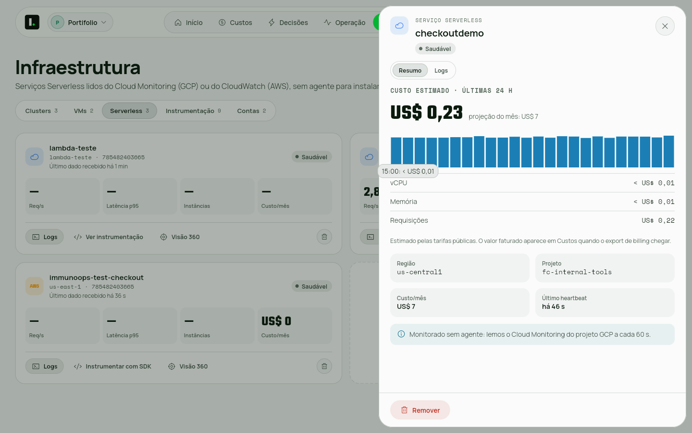
Instrumentar a aplicação
O agent já mostra a saúde da infraestrutura. Para ver métricas de negócio, logs, traces e eventos de dentro do código, conecte a aplicação pelo SDK Node.js ou por OpenTelemetry, em qualquer linguagem.
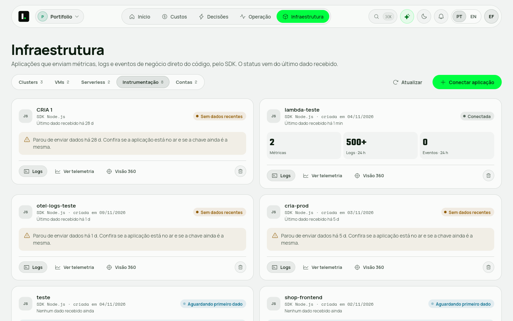
- Vá em Infraestrutura › Instrumentação e clique em Conectar aplicação.
- Preencha o Nome da aplicação e clique em Continuar. Copie a Chave de conexão: ela só aparece inteira agora.
- Instale o pacote do SDK com o comando mostrado.
- Inicialize o client colando a chave de conexão em
apiKey. - Envie o primeiro dado. O status muda sozinho para Conectada.
| Caminho | Para quem | O que chega |
|---|---|---|
SDK Node.js (@immunoops/sdk) |
Apps em Node.js e TypeScript | Métricas, logs e eventos de negócio, com mascaramento de dados pessoais |
| OpenTelemetry | Qualquer linguagem (Go, Python, Java, .NET, Ruby, PHP…) ou um OpenTelemetry Collector | Traces, métricas e logs no padrão OTLP |
Gerar a chave de conexão
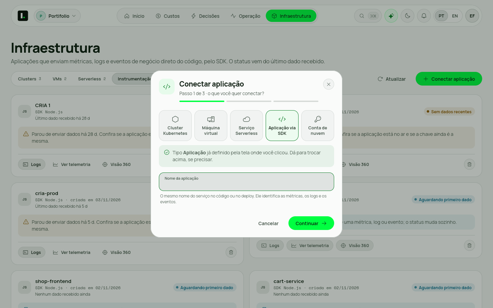
- Vá em Infraestrutura › Instrumentação e clique em Conectar aplicação. Aplicação via SDK já vem marcado.
- Preencha o Nome da aplicação (o mesmo nome do serviço no código ou no deploy) e clique em Continuar.
- Copie a Chave de conexão: ela só aparece inteira agora. Se perder, use Gerar nova nos detalhes da conexão; a anterior deixa de valer.
O status muda sozinho de Aguardando primeiro dado para Conectada quando o primeiro dado chega. Sem dados recentes quer dizer que a aplicação parou de enviar.
Guarde a chave numa variável de ambiente ou num cofre de segredos, nunca no código.
SDK Node.js
O pacote é público no npm: @immunoops/sdk. Node.js 18 ou mais novo.
npm install @immunoops/sdk
import immuno from '@immunoops/sdk';
immuno.init({
serviceName: 'checkout-api',
apiKey: process.env.IMMUNOOPS_API_KEY,
endpoint: 'https://app.immunoops.io/agent/ingest',
});
immuno.event('app_started', {});
Funciona igual com require: const immuno = require('@immunoops/sdk');. As chamadas principais:
| Chamada | Para quê |
|---|---|
immuno.increment('pedidos', 1, { status: 'ok' }) |
Contador |
immuno.metric('fila.tamanho', 42) |
Valor medido (gauge) |
await immuno.time('checkout.duration_ms', () => processar()) |
Mede a duração de uma função |
immuno.info('mensagem', { contexto }) / warn / error |
Logs da aplicação |
immuno.event('pedido.pago', { total: 49.9 }) |
Evento de negócio |
await immuno.flush() |
Envia o que está na fila agora (obrigatório antes de encerrar o processo e na Lambda) |
O SDK manda os dados em lotes a cada 5 segundos e mascara CPF, número de cartão, senhas e tokens antes de enviar. Para ver no terminal o que foi enviado, use debug: true no init.
OpenTelemetry
Qualquer aplicação instrumentada com OpenTelemetry, em qualquer linguagem, envia direto para o Immuno Ops pelo protocolo OTLP/HTTP. Não precisa do SDK do Immuno Ops nem de agent. Use a mesma chave de conexão.
| Configuração | Valor |
|---|---|
| Endpoint OTLP/HTTP | https://app.immunoops.io/agent/ingest |
| Caminhos | /v1/traces, /v1/metrics e /v1/logs (o exporter acrescenta sozinho) |
| Cabeçalho | Authorization: Bearer <chave de conexão> |
| Protocolo | http/protobuf (padrão) ou http/json. gRPC não é aceito |
O jeito mais simples é configurar pelas variáveis de ambiente padrão do OpenTelemetry, que todas as linguagens leem:
export OTEL_SERVICE_NAME=checkout-api
export OTEL_EXPORTER_OTLP_ENDPOINT=https://app.immunoops.io/agent/ingest
export OTEL_EXPORTER_OTLP_PROTOCOL=http/protobuf
export OTEL_EXPORTER_OTLP_HEADERS="Authorization=Bearer SUA_CHAVE"
Exemplo em Go
Com as variáveis acima, o exporter HTTP do OpenTelemetry já sabe para onde enviar e com qual chave:
import (
"go.opentelemetry.io/otel"
"go.opentelemetry.io/otel/exporters/otlp/otlptrace/otlptracehttp"
"go.opentelemetry.io/otel/exporters/otlp/otlpmetric/otlpmetrichttp"
sdkmetric "go.opentelemetry.io/otel/sdk/metric"
sdktrace "go.opentelemetry.io/otel/sdk/trace"
)
func setupOTel(ctx context.Context) (func(context.Context) error, error) {
traceExp, err := otlptracehttp.New(ctx) // lê OTEL_EXPORTER_OTLP_*
if err != nil {
return nil, err
}
metricExp, err := otlpmetrichttp.New(ctx)
if err != nil {
return nil, err
}
tp := sdktrace.NewTracerProvider(sdktrace.WithBatcher(traceExp))
mp := sdkmetric.NewMeterProvider(sdkmetric.WithReader(sdkmetric.NewPeriodicReader(metricExp)))
otel.SetTracerProvider(tp)
otel.SetMeterProvider(mp)
return func(ctx context.Context) error { // chame ao encerrar
_ = tp.Shutdown(ctx)
return mp.Shutdown(ctx)
}, nil
}
Logs seguem o mesmo padrão com otlploghttp. Para HTTP e gRPC do próprio Go, os pacotes otelhttp e otelgrpc criam os spans de cada requisição.
Outras linguagens
Com as mesmas variáveis de ambiente:
- Python:
pip install opentelemetry-distro opentelemetry-exporter-otlp && opentelemetry-bootstrap -a install, depois rode a aplicação comopentelemetry-instrument python app.py. - Java: baixe o
opentelemetry-javaagent.jare rode comjava -javaagent:opentelemetry-javaagent.jar -jar app.jar. - Node.js com OpenTelemetry (em vez do SDK do Immuno Ops):
npm install @opentelemetry/auto-instrumentations-nodee rode comnode --require @opentelemetry/auto-instrumentations-node/register app.js. - .NET, Ruby, PHP: o SDK de OpenTelemetry da linguagem com o exporter OTLP/HTTP.
Pelo OpenTelemetry Collector
Se você já tem um Collector, acrescente um exporter OTLP/HTTP e coloque-o nos pipelines. Nas versões 0.165 em diante o nome é otlp_http; nas anteriores, otlphttp:
exporters:
otlphttp/immunoops:
endpoint: https://app.immunoops.io/agent/ingest
headers:
Authorization: "Bearer ${env:IMMUNOOPS_TOKEN}"
service:
pipelines:
traces: { receivers: [otlp], processors: [batch], exporters: [otlphttp/immunoops] }
metrics: { receivers: [otlp], processors: [batch], exporters: [otlphttp/immunoops] }
logs: { receivers: [otlp], processors: [batch], exporters: [otlphttp/immunoops] }
Rode o Collector com a variável IMMUNOOPS_TOKEN com a chave de conexão. O exporter comprime em gzip por padrão; o Immuno Ops aceita.
Se não chega nada
| O que aparece | O que fazer |
|---|---|
401 no exporter |
A chave está errada ou foi trocada por uma nova. Gere outra nos detalhes da conexão e use a última |
Endpoint com /v1/traces duas vezes |
Use https://app.immunoops.io/agent/ingest sem caminho em OTEL_EXPORTER_OTLP_ENDPOINT; o exporter acrescenta |
| Exporter gRPC (porta 4317) | Troque para OTLP/HTTP (http/protobuf) |
| Status continua Aguardando primeiro dado | Confira se a aplicação tem saída HTTPS para app.immunoops.io |
Atalho para Cloud Run e VMs: Na linha de um serviço já registrado, Instrumentar minha aplicação gera a chave e o snippet prontos para colar.
Lambda com o SDK
A Lambda congela o processo assim que a função retorna. Por isso, envie os dados antes de retornar:
const immuno = require("@immunoops/sdk");
immuno.init({
apiKey: process.env.IMMUNOOPS_API_KEY,
endpoint: "https://app.immunoops.io/agent/ingest",
serviceName: "checkout",
environment: "production",
});
exports.handler = async (event) => {
await immuno.time("checkout.duration_ms", () => processar(event));
immuno.increment("checkout.orders", 1, { status: "ok" });
immuno.event("checkout.completed", { total: 49.9 });
await immuno.flush(); // obrigatório na Lambda
return { ok: true };
};Guarde a chave numa variável de ambiente da função (ou no Secrets Manager), nunca no código.
Créditos por aplicação
Cada card em Infraestrutura › Instrumentação mostra Créditos neste ciclo: quanto a telemetria daquela aplicação consumiu do plano no ciclo atual. O total e o saldo ficam em Configurações › Empresa e plano (passo 13).
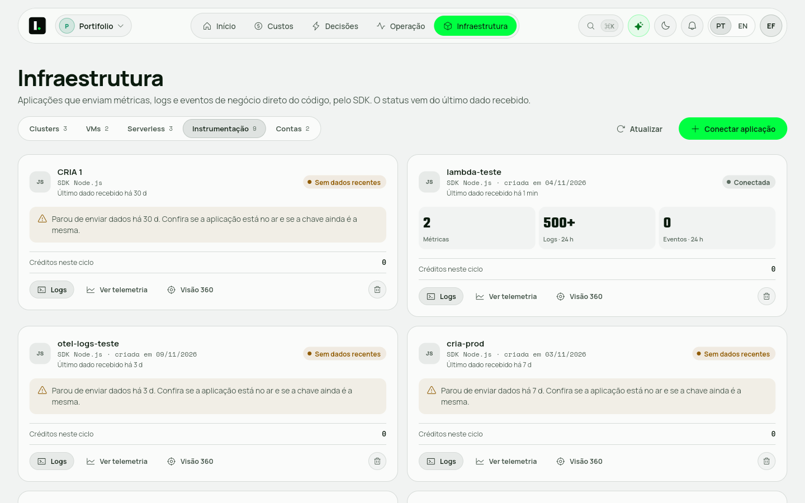
Ler a Visão Geral
O Início e Operação › Visão geral respondem uma pergunta: está tudo bem agora? Os números são os mesmos em todas as telas: um alerta aqui é o mesmo alerta em Operação › Incidentes.
- Início: a frase de status (“Tudo sob controle”, ou quantos itens pedem atenção), alertas disparando, anomalias abertas e conexões com problema.
- Pede sua atenção: cada linha traz o recurso com problema e o atalho para resolver.
- Para onde vai o dinheiro: o custo por provedor, com atalho para Custos.
- Operação › Visão geral: serviços monitorados, com problema agora, incidentes abertos e cobertura de traces, e a lista de serviços com estado, erros, latência p95, saturação e os sinais M, L, T e E (métricas, logs, traces e eventos).
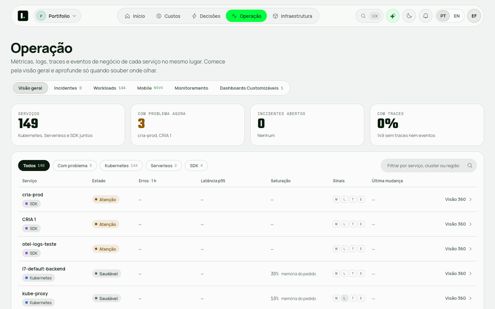
Investigar um incidente
Resposta a incidente com contexto, não alerta solto. Um roteiro para ir do alerta à causa:
Triagem
Veja a linha do tempo ao vivo e reconheça o alerta, para o time saber que alguém está olhando.
Qual serviço
Filtre por nome, namespace ou cluster. Cada workload mostra réplicas, CPU pedida → sugerida, memória e economia, e abre a Visão 360.
Por quê
Na Visão 360 de cada serviço, métricas, logs, traces e eventos no mesmo eixo de tempo, padrões de log, traces mais lentos, dependências e custo.
Acompanhar
Dashboards do seu time com painéis reais, sem depender do editor do Grafana.
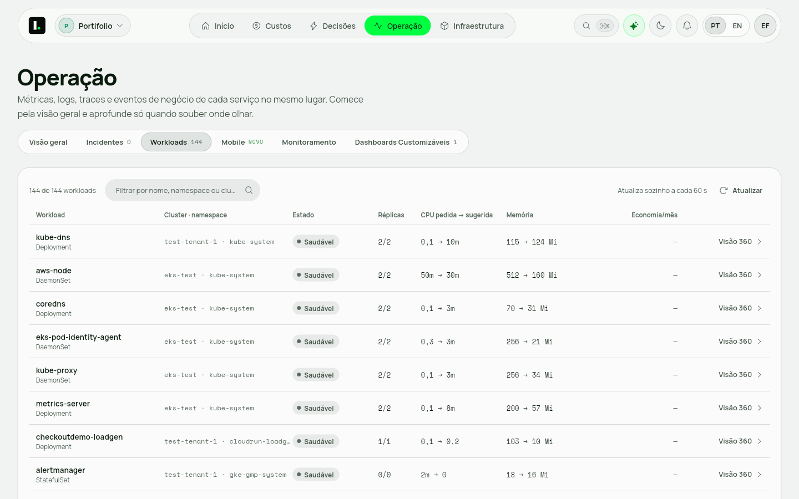
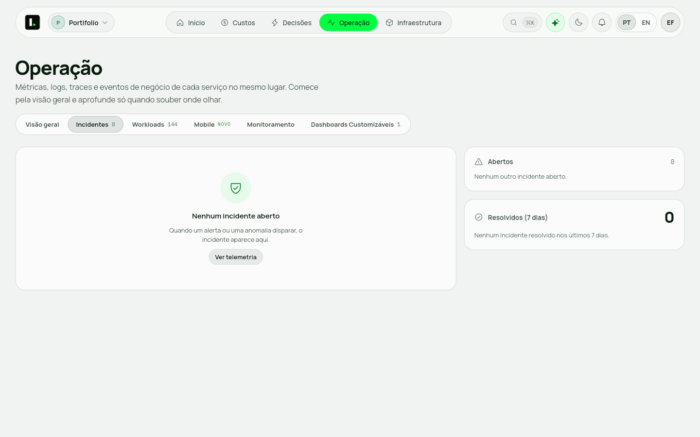
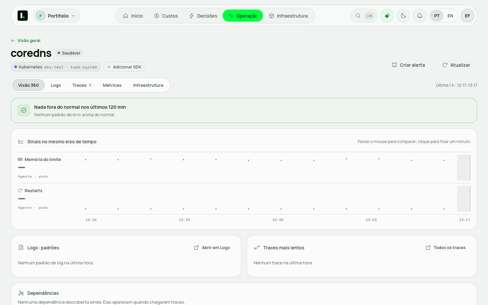
Montar um dashboard MELT
MELT são os quatro sinais: Métricas, Eventos, Logs e Traces. Um dashboard customizável junta os quatro de um serviço numa tela, com dados reais da sua organização e sem abrir o Grafana. Quem tem papel de editor ou admin cria e altera; os demais só leem.
- Abra a lista. Em Operação › Dashboards Customizáveis ficam os dashboards da organização. Clique em Novo dashboard.
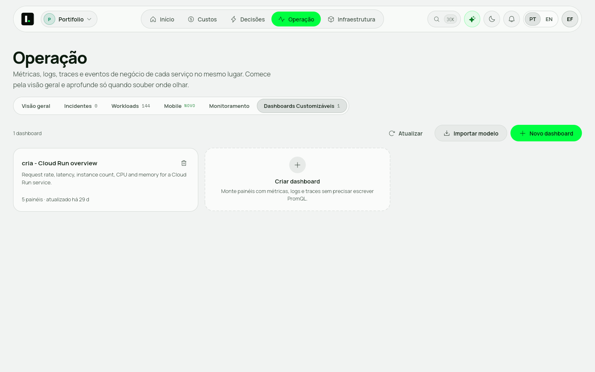
Operação › Dashboards Customizáveis - Dê nome e descrição. Use um nome que diga o serviço e o ambiente, por exemplo MELT · checkout (eks-test), e clique em Criar.
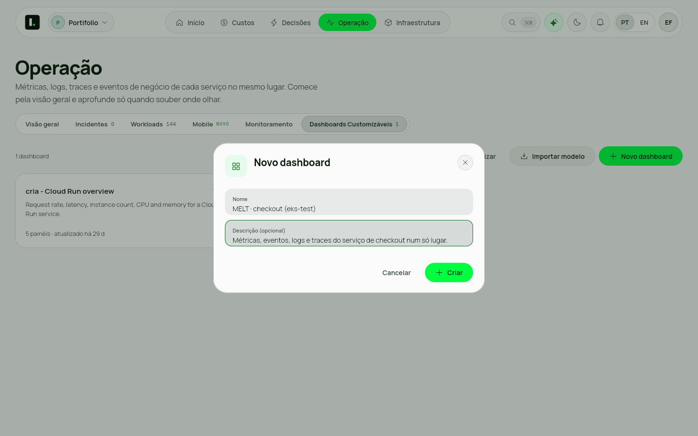
Novo dashboard com nome e descrição - Comece pelo painel vazio. O dashboard abre vazio, com o Período no topo. Use Adicionar painel ou um dos atalhos prontos (Logs de erro, Traces com erro, Traces acima de 1 s).
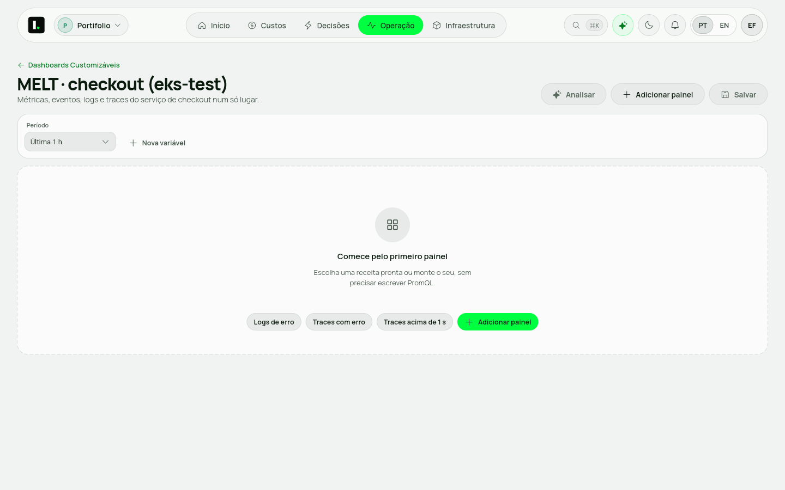
Dashboard vazio com atalhos - M · Métricas: série temporal. Em Adicionar painel, escolha Série temporal. No modo Montar, escolha a métrica em O que medir; quem conhece PromQL troca para PromQL e escreve a consulta, por exemplo
host_cpu_utilization. A Prévia à direita já mostra os dados reais. Dê um título e clique em Adicionar painel.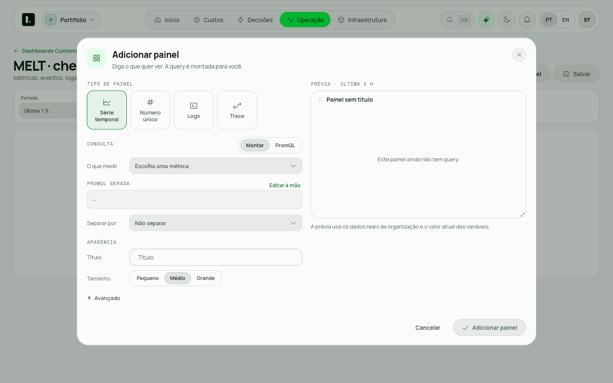
Adicionar painel no modo Montar 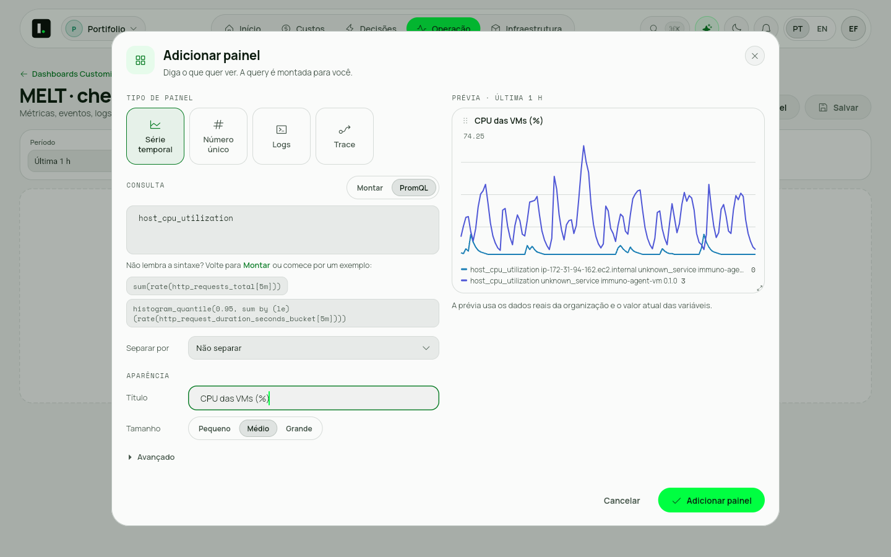
Série temporal em PromQL com prévia real - E · Eventos: número único. Escolha Número único para um valor que se lê de relance, como
count(host_cpu_utilization)(quantas VMs estão reportando). Tamanho Pequeno basta.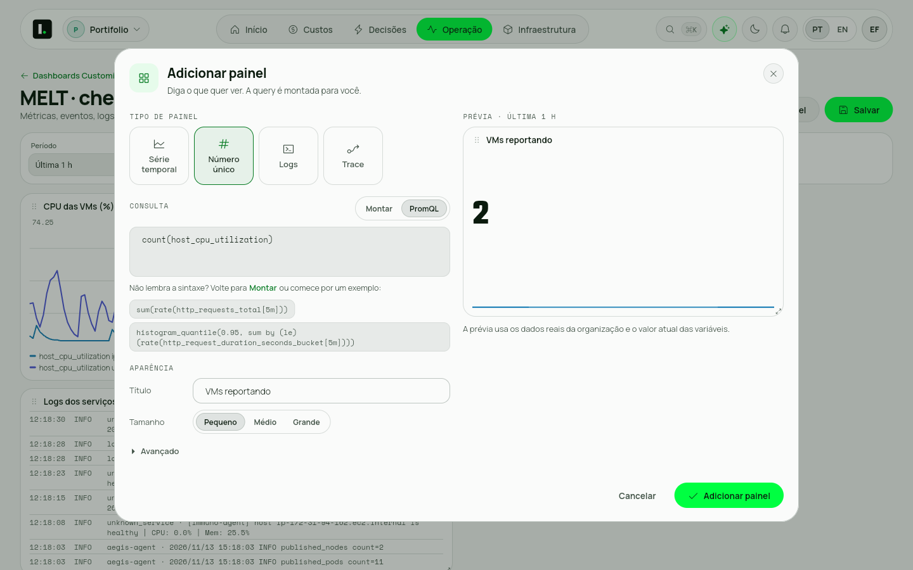
Número único com a contagem de VMs - L · Logs. Escolha Logs. Filtre por Workload, Nível (ex.: só ERROR) e um trecho em Contém. A LogQL é gerada sozinha; Editar à mão libera a consulta.
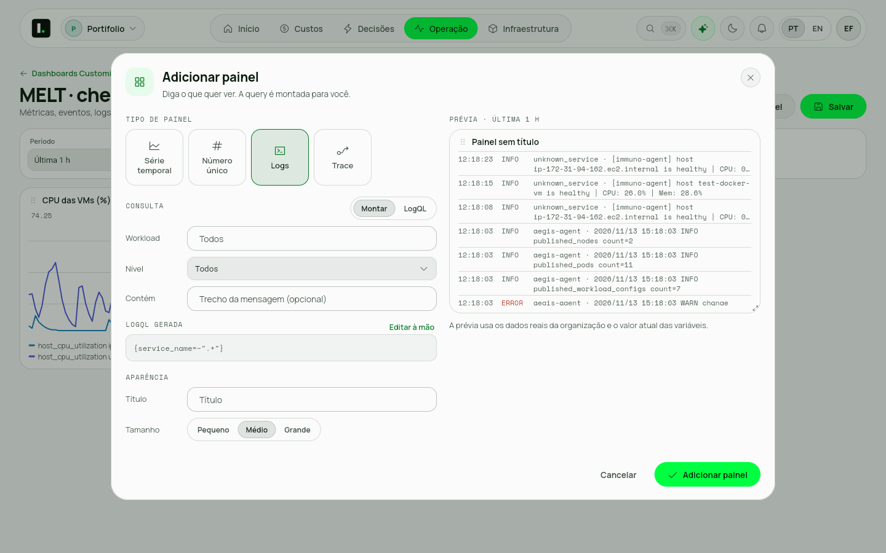
Painel de logs com filtros e LogQL gerada - T · Traces. Escolha Trace. Filtre por Serviço, Mais lentos que e Status (ex.: só erros). Traces só aparecem de serviços instrumentados com OpenTelemetry (passo 07); sem eles o painel mostra Sem dados nesta janela.
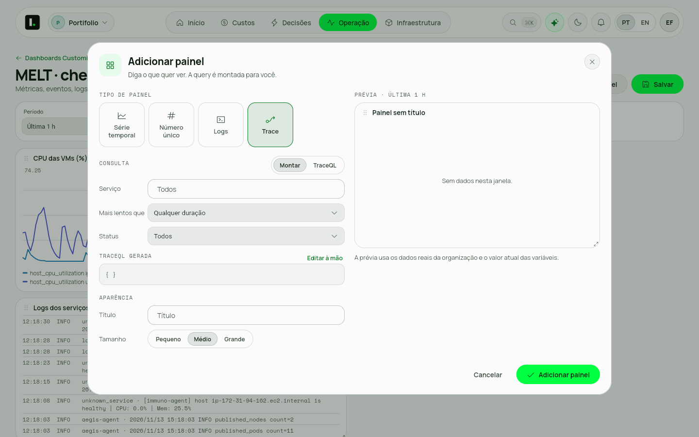
Painel de traces com filtros e TraceQL gerada - Ajuste o período e salve. Troque o Período (15 min a 7 dias) e todos os painéis recarregam juntos. Arraste pelo canto ⠿ para reordenar e pelo canto inferior para redimensionar. Clique em Salvar; o aviso Dashboard salvo. confirma. Depois, Analisar pede à IA uma leitura do dashboard.
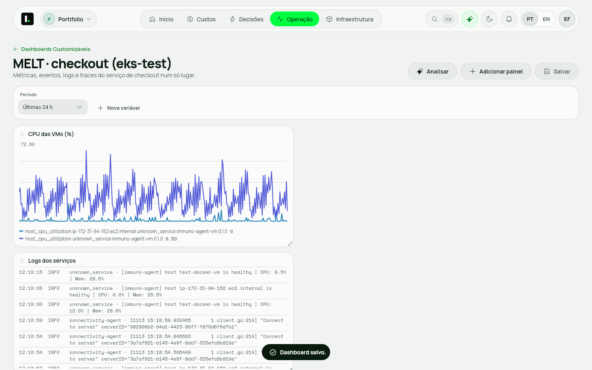
Dashboard salvo com métricas e logs 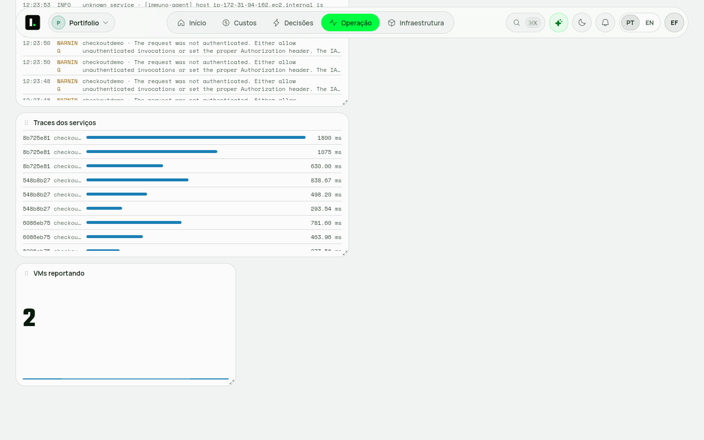
Traces do checkout-api com a duração de cada span, e o número único
Monitores de anomalia e regras de alerta
Em Operação › Monitoramento ficam as regras de alerta e os monitores de anomalia.
- Criar um monitor de anomalia. Clique em Criar o primeiro monitor (ou Novo monitor), dê um nome, escolha o Serviço e métrica e a Sensibilidade: Baixa, Média (avisa a 3 desvios-padrão do normal) ou Alta. A cada minuto o valor é comparado com o padrão dos últimos 7 dias; uma métrica nova precisa de cerca de 1 hora de dados. Clique em Criar monitor.
- Excluir. Excluir na linha do monitor pede confirmação. O monitor para de avaliar na hora; incidentes já abertos continuam.
- Regras de alerta. Uma regra nasce de um painel de dashboard. Na lista, cada regra tem Silenciar, Retomar e Excluir.
Endpoints, dependências e o waterfall do trace
Na Visão 360 de um serviço, a seção Endpoints lista as rotas mais lentas, com mais erro e mais chamadas. Ela precisa que o serviço envie a rota (http.route) nas métricas; sem isso aparece Este serviço não envia a rota nas métricas e o atalho Guia de instrumentação. Logo abaixo, Lista e Mapa mostram os serviços com que ele conversa, com volume e erro por ligação; as dependências aparecem quando chegam traces.
Clique em qualquer trace (na Visão 360 ou num painel de traces) para abrir o waterfall: cada span com a duração, a frase de qual parte pesou mais (ex.: SELECT orders levou 498 ms, 59% do total), Ver logs deste trace e Perguntar à IA.
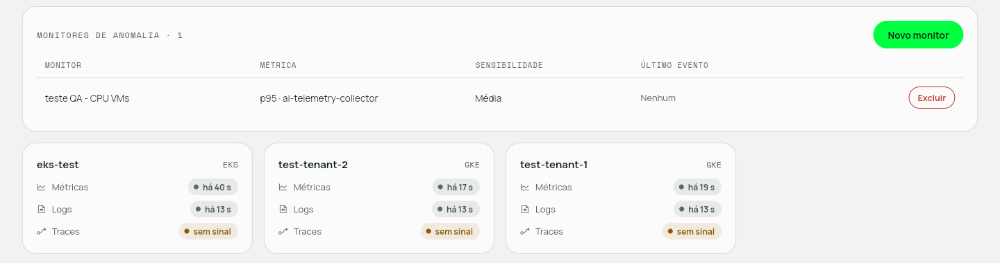
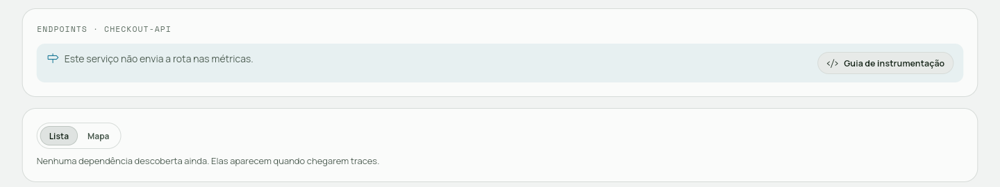
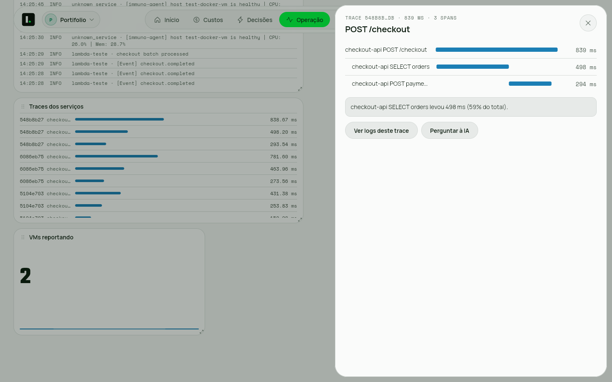
Custo e FinOps
Clique em Custos na barra do topo. O custo vem da fatura das suas contas de nuvem (export de billing do Google Cloud e export FOCUS da AWS) e do uso real dos clusters, nunca de amostra. A tela tem quatro abas.
| Aba | O que mostra |
|---|---|
| Resumo | Gasto diário dos últimos 7, 30 ou 90 dias, com uma barra por provedor e o total e a % de cada um. Orçamento do mês (defina em Definir orçamento). Namespaces que mais custam e CPU pedida × usada por cluster. |
| Kubernetes FinOps | Um cartão por cluster (GKE, EKS…): custo do mês, eficiência de CPU e desperdício, cada um na moeda da fatura do cluster. |
| SKUs de nuvem | Preço por tipo de instância, com filtro por provedor (GCP, AWS, Azure) e busca. |
| FOCUS Normalizer | A fatura de cada nuvem no mesmo formato (padrão FOCUS 1.2): um cartão por provedor com o total e o maior serviço, e a tabela de recursos com provedor, região, serviço e custo efetivo. Export CSV baixa a tabela; Reimport lê o export de novo. |
- Abra Custos › Resumo e escolha o período (7d, 30d ou 90d).
- Leia a legenda do gráfico: cada provedor aparece com o total no período e a sua parte em %. A barra de hoje é menor porque o dia ainda está sendo faturado.
- Em Kubernetes FinOps, compare custo, eficiência de CPU e desperdício entre clusters. O cluster com mais desperdício é onde começar.
- Em FOCUS Normalizer, veja recurso por recurso de onde vem cada valor da fatura.
- O custo de um workload aparece na Visão 360, em Custo deste workload.

Mais de uma nuvem e mais de uma moeda
Cada nuvem fatura na sua moeda: a AWS em dólar (USD) e o Google Cloud na moeda da conta de faturamento (por exemplo, real). O Immuno Ops não mistura moedas sem dizer:
- Cartões e tabelas (Kubernetes FinOps, FOCUS Normalizer, Infraestrutura, Visão 360) mostram cada valor na moeda da própria fatura. Um cluster EKS aparece em US$ ao lado de um GKE em R$.
- Gasto diário soma tudo numa moeda só. O valor em dólar é convertido pela taxa que o próprio export de billing do Google registrou em cada dia (
currency_conversion_rate), e a nota abaixo do gráfico mostra o valor original e a taxa média. - Orçamento do mês usa só a fatura do Google Cloud, na moeda dela.
Custo da AWS
Depois de Conectar à AWS, o Immuno Ops lê o export FOCUS da sua conta a cada 6 horas e logo depois de Testar conexão. O primeiro arquivo da AWS chega em até 24 horas.
| Recurso | Como o custo aparece |
|---|---|
| Cluster EKS | Uma linha com o nome do cluster cadastrado, somando o plano de controle, as instâncias EC2 dos nós e os volumes EBS deles. NAT Gateway, Load Balancer e tráfego ficam em linhas próprias. O custo do cluster é dividido entre namespaces e workloads pelos requests de CPU e memória. |
| VM EC2 e Lambda | Com o nome cadastrado em Serverless e VMs, na aba da VM ou do serviço. |
| Demais serviços | Uma linha por recurso (NAT, ENI, CloudWatch, S3, KMS…), com o provedor AWS e a região. |
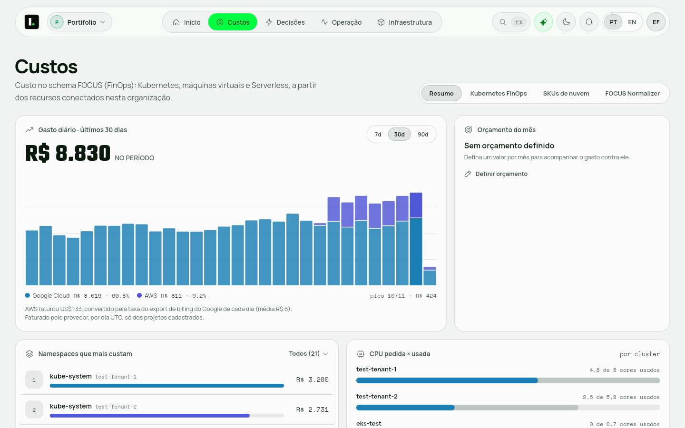
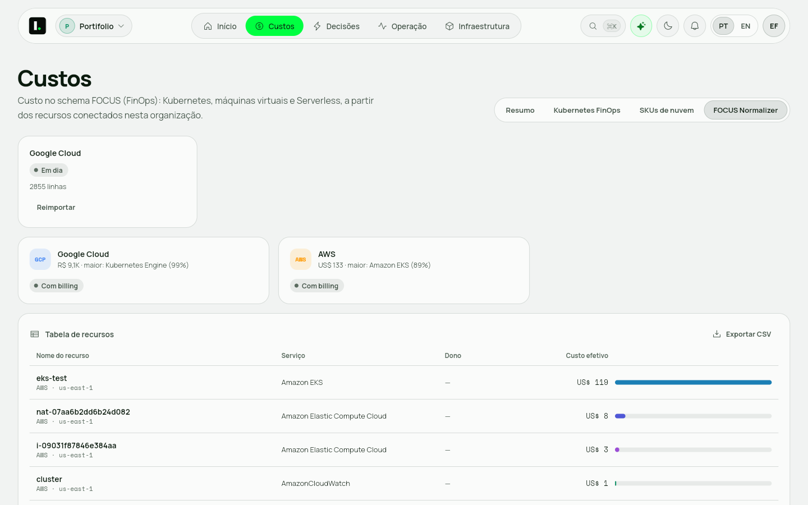
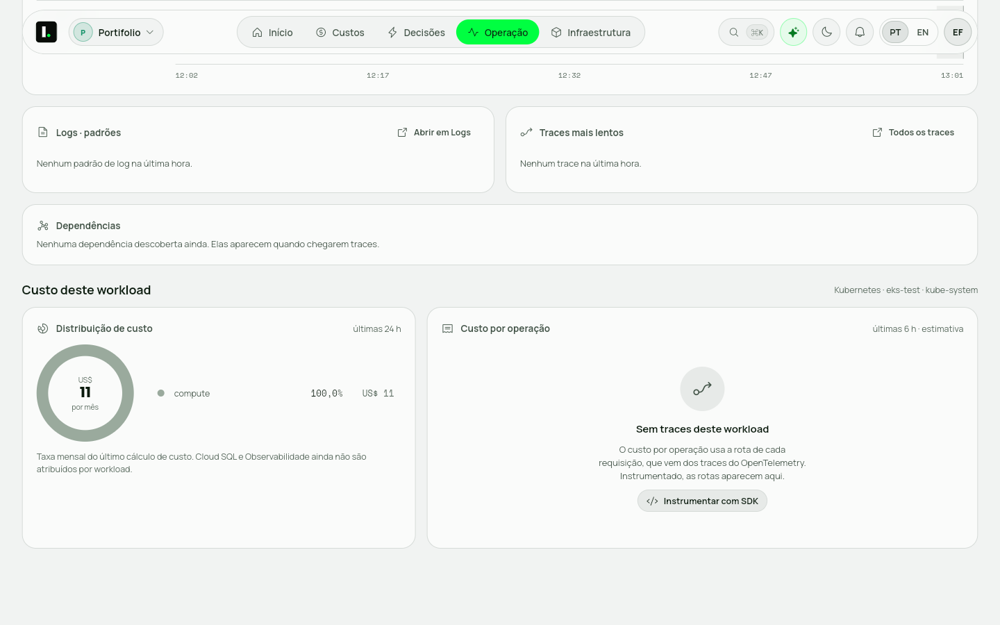
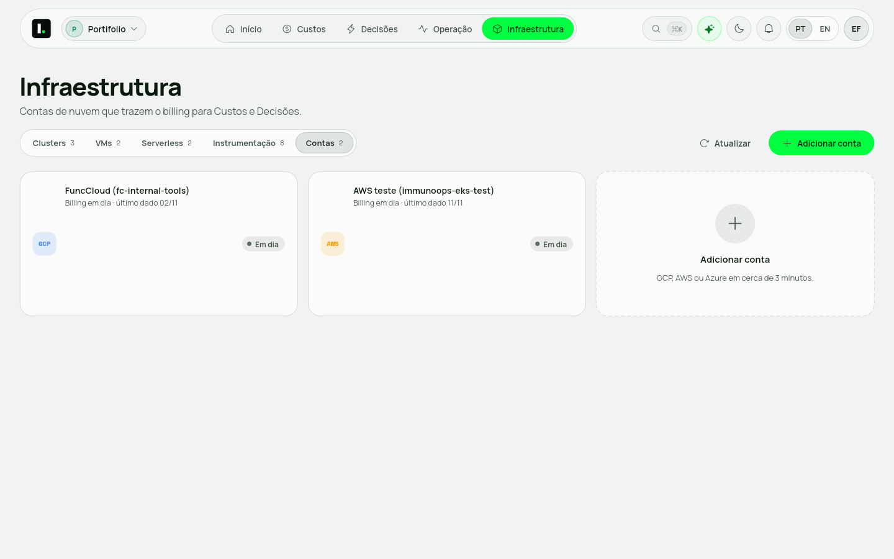
Convidar a equipe
- Vá em Configurações › Equipe e clique em Convidar pessoa.
- Informe o e-mail (o nome é opcional) e escolha o papel.
- Clique em Convidar. A pessoa aparece como Convite enviado até aceitar.
- Em cada linha você troca o papel (Leitura, Operador ou Admin), reenvia um convite expirado em Reenviar ou remove a pessoa pelo ícone de lixeira.
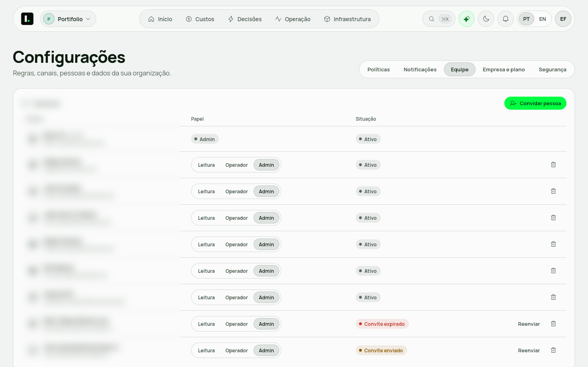
| Papel | O que pode fazer | Indicado para |
|---|---|---|
| Administrador | Gerencia pessoas, clusters e políticas. | Head de plataforma, SRE lead |
| Operador | Aplica correções e cuida de alertas. Não gerencia pessoas. | SREs, quem está de plantão |
| Leitura | Só vê painéis, alertas e custos. | Gestores, financeiro, devs consultando |
Suspender e reativar acesso
Em Configurações › Equipe, Suspender na linha da pessoa corta o acesso na hora sem apagar a conta; o mesmo botão vira Reativar. Para remover de vez, use a lixeira. Convites vencidos aparecem como Convite expirado, com Reenviar.
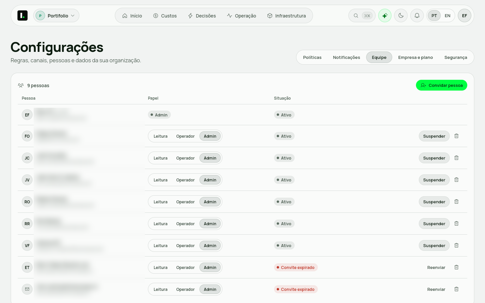
Proteger sua conta
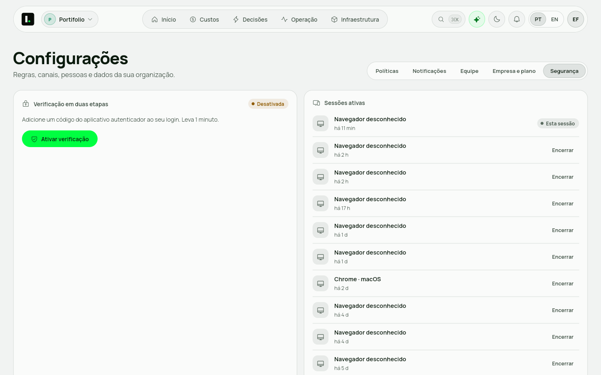
- Clique no seu avatar, no canto direito da barra do topo, e escolha Segurança (Configurações › Segurança).
- Em Verificação em duas etapas, clique em Ativar verificação em duas etapas.
- Leia o QR Code com o app autenticador. Sem câmera? Use Copiar chave e cole no app.
- Digite o código de 6 dígitos e clique em Confirmar e ativar.
Falar com vendas
Quer ampliar os limites ou precisa de um contrato com SSO e SLA? Fale com o time direto pelo console. Seu uso já vai junto no pedido, então você só conta o que precisa.
- Vá em Configurações › Empresa e plano e, no painel Plano, clique em Falar com vendas.
- Escolha o assunto: Trocar de plano, Aumentar volume de créditos, Enterprise ou contrato personalizado ou Outra dúvida.
- Se quiser, conte mais: por exemplo, quantos clusters você pretende conectar.
- Escolha como prefere ser contatado: e-mail (resposta em até 1 dia útil) ou WhatsApp (mais rápido no horário comercial).
- Envie. Você recebe um protocolo, e alguém do time técnico responde direto, sem fila de qualificação automática.
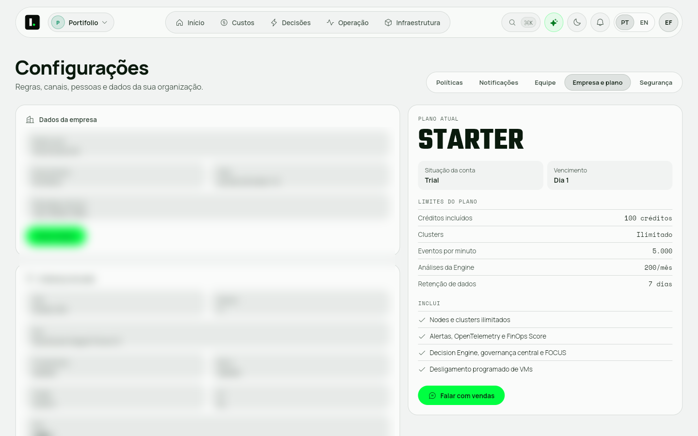
Ver o plano e os créditos
Configurações › Empresa e plano mostra o plano atual, a situação da conta, o vencimento, o consumo de créditos do ciclo e os limites do plano. Em trial, os créditos aparecem como ainda não liberados. O consumo por aplicação está em Créditos por aplicação.
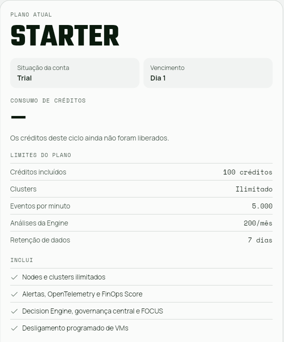
Perguntas frequentes
Dados e acesso
Preciso dar acesso de escrita na minha conta de nuvem?
roles/bigquery.dataViewer) no dataset do export, para aegis-worker@immunoops-prod.iam.gserviceaccount.com. O passo a passo está em Conta de nuvem. Na AWS, o papel immunoops-billing-reader só tem s3:ListBucket no prefixo focus/ e s3:GetObject em focus/*, para a identidade do Google do Immuno Ops. Não há usuário IAM nem chave de acesso. O passo a passo está em Permissões no papel de leitura. Métricas da Lambda usam leitura do CloudWatch no papel immunoops-billing-reader, em CloudWatch da Lambda. Métricas e logs do Cloud Run, e ligar ou desligar VM no GCP, usam a conta do worker, em Permissões de VM e Cloud Run. Na EC2, listar, iniciar e parar estão no papel immunoops-billing-reader, em Ligar e desligar a VM.O Cloud Run não mostra métricas ou logs
roles/monitoring.viewer e roles/logging.viewer para aegis-worker@immunoops-prod.iam.gserviceaccount.com. Os comandos estão em Cloud Run. Se a tela disser que a coleta de logs ainda não está habilitada para a conta, fale com o suporte: o papel prepara o acesso, e a coleta começa depois dessa liberação.A política de suspensão não desliga a VM
aegis-worker@immunoops-prod.iam.gserviceaccount.com precisa listar, iniciar e parar instâncias no projeto da VM. Os comandos do papel immunoOpsVmPower estão em VM. A VM também precisa do agente instalado e de saída HTTPS para app.immunoops.io para enviar métricas e logs. Na EC2, listar fica no papel immunoops-billing-reader e ligar e desligar no papel immunoops-power, em Ligar e desligar a VM.A Lambda não mostra invocações, duração ou concorrência
immunoops-billing-reader, conceda cloudwatch:GetMetricData e cloudwatch:ListMetrics no namespace AWS/Lambda. Sem logs:FilterLogEvents no grupo /aws/lambda/*, a aba de logs fica sem as linhas da função. Os comandos estão em CloudWatch da Lambda.A organização bloqueia a conta do Immuno Ops no IAM
iam.allowedPolicyMemberDomains está recusando um membro de fora. Inclua o customer ID C011tigzz (organização immunoops.io, id 424787708642) como exceção, de preferência só no projeto do billing, e rode de novo os comandos de leitura.A conta GCP está “Sem tabela”
projeto.dataset.tabela e clique em Salvar tabela. Sem essa tabela a conta não entra no billing.Os números são reais?
Por que a AWS aparece em dólar e o Google Cloud em real?
Conectei a AWS e o custo ainda não aparece
Problemas comuns
Meu cluster está como “Pendente” há muito tempo
helm terminou sem erro, se os pods do agent estão Running e se o cluster tem saída de rede para o Immuno Ops.